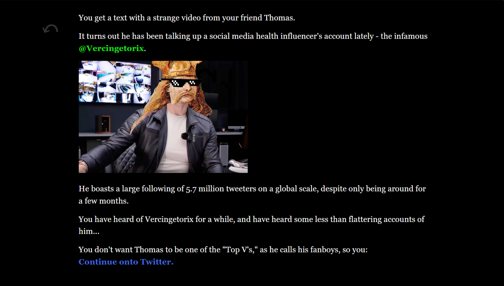
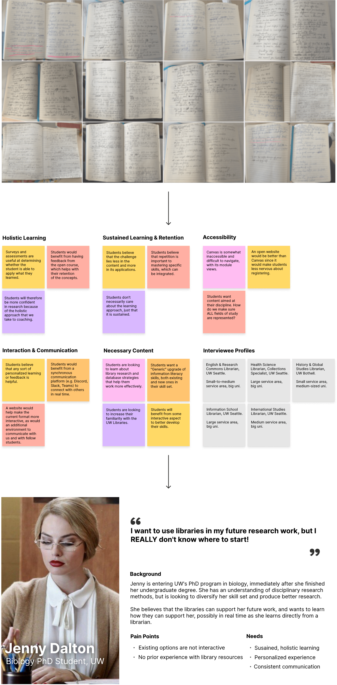
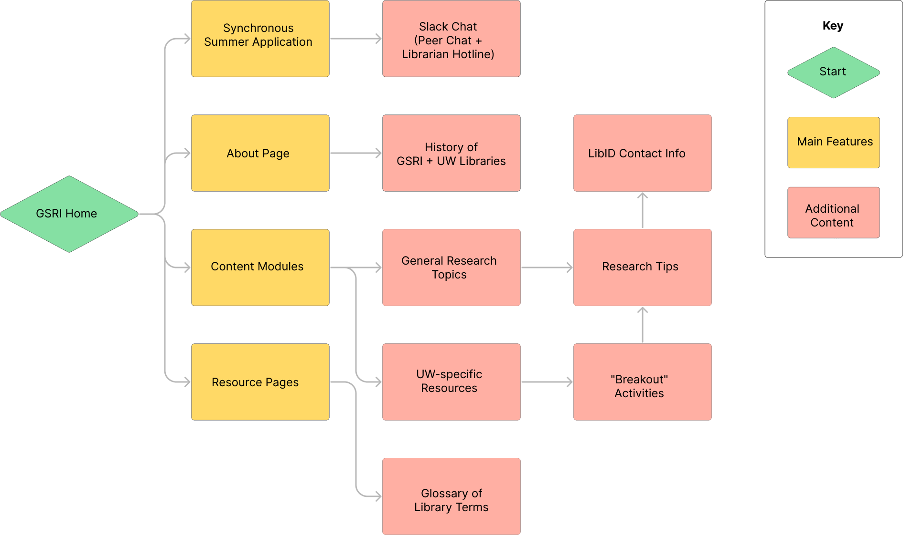
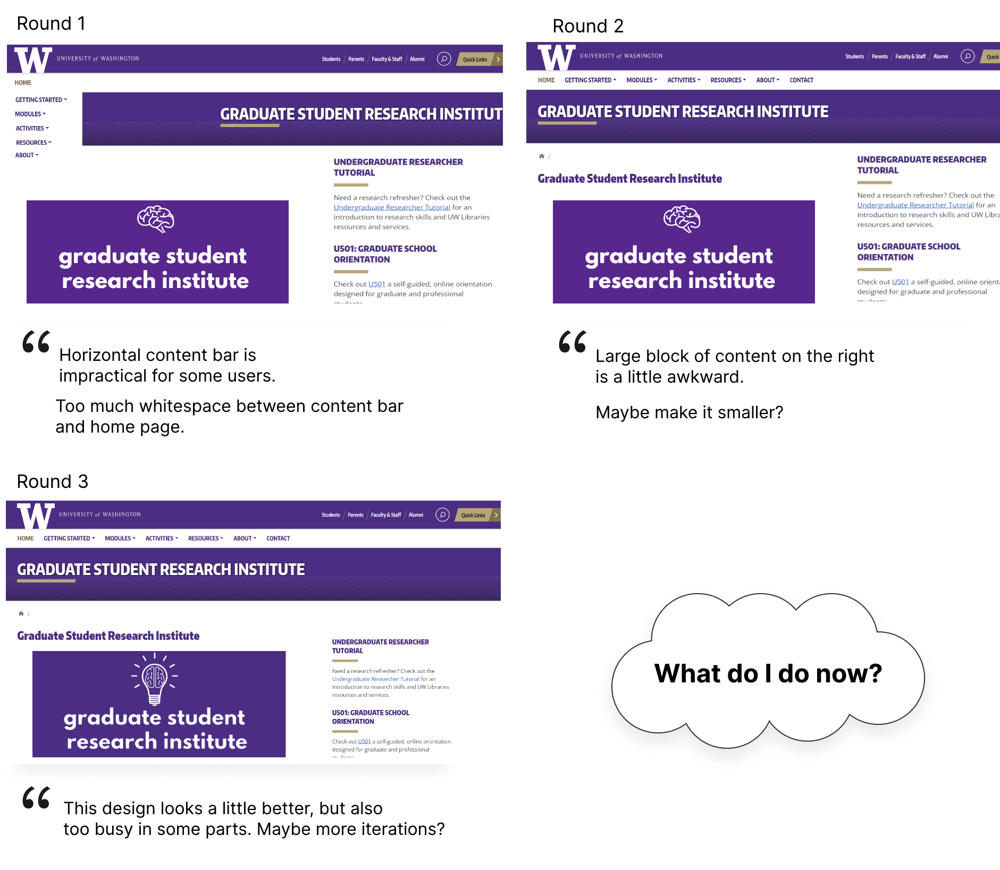
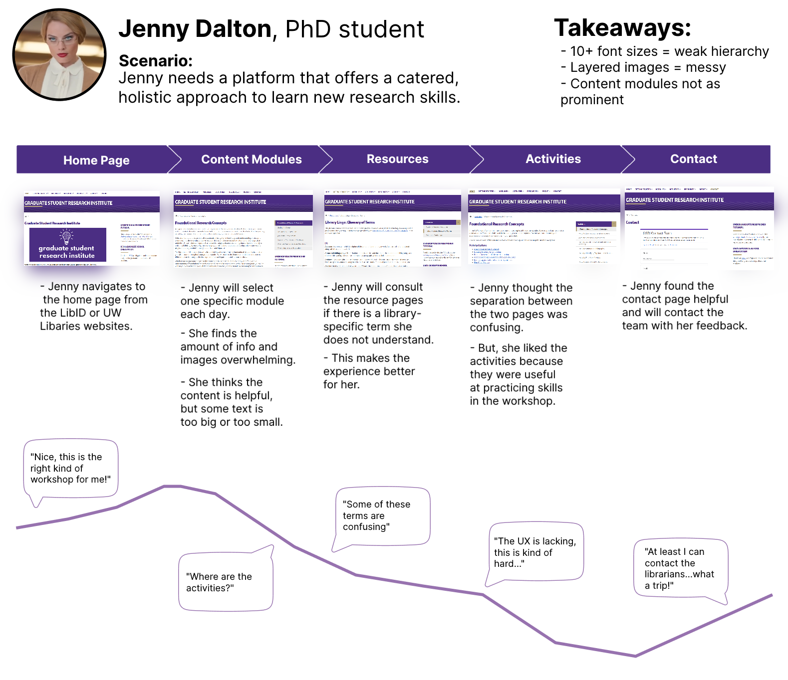
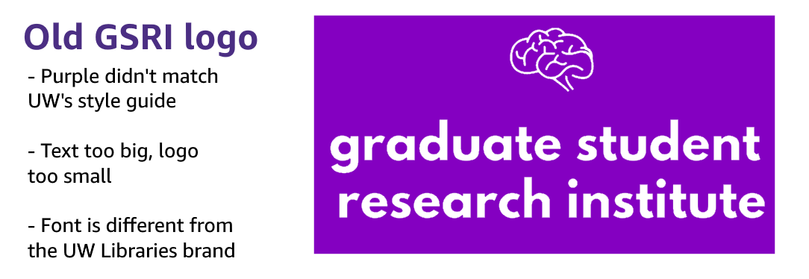
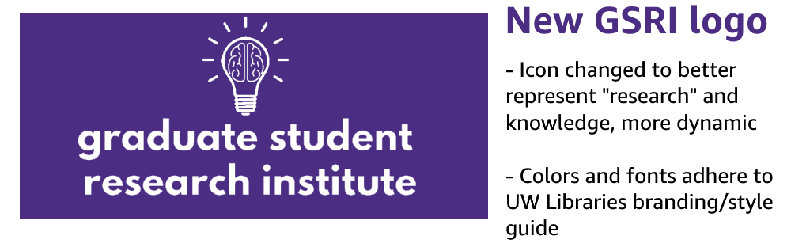
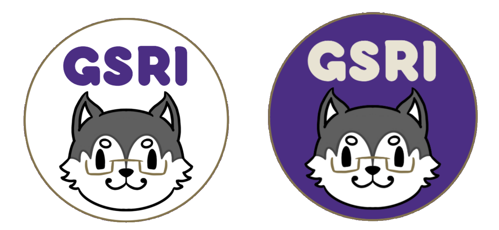
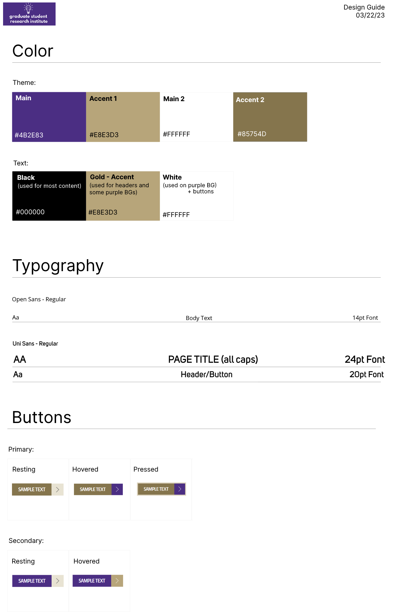
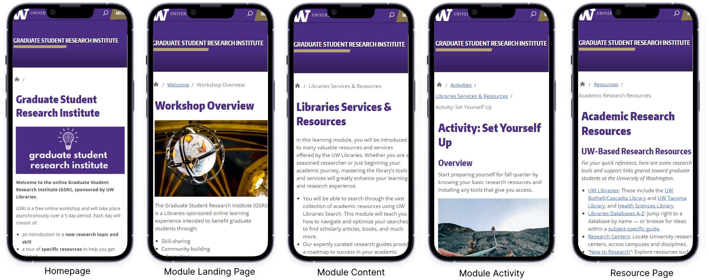

Baloney Detectives was my first design project in the MLIS program, for the core Design Methods course (LIS 547). My group designed a virtual escape room aimed at teenagers, where they solve puzzles related to misinformation on Twine. It got me even more excited about game-based learning, digital literacy, and instructional design!
Twine (HTML)
Figma
Adobe Photoshop
February - March 2023 (2 Months)
During the 2022-23 school year, we took the existing GSRI workshop, which was closed off to students selected from an application pool, and developed a massive open online course (MOOC) to open the workshop up to the wider UW community. The goal was to transfer all the content into an open format, but continue offering a personalized experience to students who were interested in a community-centered workshop by maintaining our closed Slack chat.
As the first designer hired to work on the dashboard, I set the UX standards in the company. From synthesizing existing research to designing the MVP's primary feature: the soft skill practice flow, my work was instrumental to the start-up's earlier days and enabled future growth.
To better understand user needs, I conducted semi-structured interviews of UW librarians representing different departments and disciplines, alongside my team. I then analyzed to create an affinity map and user persona on Figma, reflecting both what we are currently doing and what we can do in the future with GSRI.

Yes, that is Margot Robbie in the persona. Watch this Saturday Night Live sketch, which is sort of relevant, to see why I picked her for our persona.

3 rounds of design critiques saw the initial mockups change. Most of the team’s feedback was on the home page. Despite defending my design choices and iterating several times, we weren't necessarily progressing.

Instead of understanding the root cause of statements like “I think that’s awkward” and “It needs to look better,” I assumed that I knew what the team was thinking, and it caused me to go on tangents, trapping me in a cycle.
I had about a month left to deliver this content mockup before we applied for web hosting, and I quickly broke the cycle by asking follow-up and clarifying questions in the following design critique.
Although understanding each team member’s thoughts was a starting point, I realized we might lose sight of our audience. I walked through my mockups with the team using the user persona as a proxy, and created this journey map using Figma.

We created several new pages based on resources and research conepts we wanted to share with the UW community, including free software for students, copyright, and the importance of equity in citations! This shows how we took what we valued and included it in our design, since we thought it would benefit more people.
We also consulted subject matter experts (SMEs) across the UW community to strengthen our content in some areas that we knew less about than others, and this collaboration was one of the most impactful parts of GSRI now that I think about it. I scheduled and coordinated consultations with a UW law librarian for the copyright module, and felt that I was able to learn a lot that I couldn't have learned from just looking things up on the internet when it came to understanding copyright and how libraries play into it.
We made the logo less busy, made it match the UW Libraries style guide's font, and changed the "brain icon" that one of the librarians found 5 years ago, and I used Illustrator to create a husky logo that we were to use as profile pictures in the Slack chat. This was a good way to brand a "new" GSRI to represent the new experience. My coworker ended up using her sticker printer to share the designs as stickers for students that completed GSRI!



From colors and fonts to buttons and text fields, we wanted to be as comprehensive as possible so that we had a good reference for our prototype website.

One critique that was raised during testing sessions was that the site was not very accessible on users' phones or tablets, despite many users using those devices for Canvas. This led to us modifying the website's design and presentation for mobile devices so that it looked less cluttered and less like a mini version of the PC site. WordPress's customization options worked in our favor here.

This project gave me a good foundation of the design process and its intersection with education. While I had been "designing" for a while through my love of art, I began to understand design as a way of seeing the world thanks to this project. I improved my ability to apply theoretical concepts into my design work, based on what we learned in class, and learned that sometimes it is okay to not have all your ideas implemented into a project, since I had to sacrifice creative control and hear my groupmates out. This was a valuable lesson I still take with me.